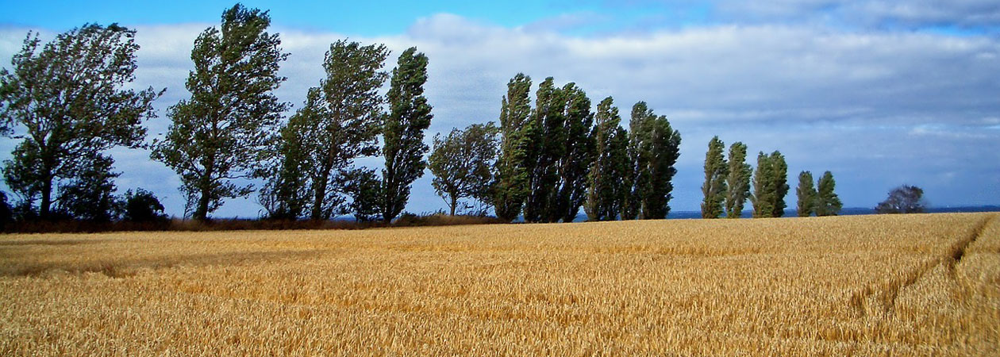

Méthode de notation :

Chaque plante se voit attribuer plusieurs caractéristiques :
• Production moyenne de miel en Kg par hectar
• Dose de nectar notée de 1 à 3
• Dose de pollen notée de 1 à 3
• Période de floraison
C'est à partir de cela que nous determinons l'intérêt apicol de chaque plantes mélifère que nous notons de 1 à 3. La plupart pouvant être vérifiés en s'interressant aux plantes les plus cultivées par les apiculteurs professionel.
Ce n'est cependant pas le seul interet de cette application car elle permet d'avoir accès à d'autres informations tel que l'orientation de la plante, sa famille, son nom latin ou encore son nom courant. A partir de ça,
de la période de floraison et du type de production (nectar ou pollen), il est possible de créer un environnement optimal et personnalisé pour une meilleure production de miel mais aussi une meilleure qualité de vie des aibeilles.